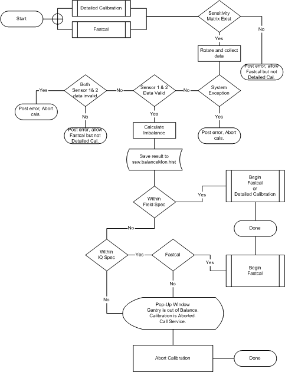

Operating Documentation
Direction 5193574-800, Rev# 22
LightSpeed 7.X Service Methods
Module Version 1.0, Version Date 10/20/08
Operating Documentation |
| Last Revised: | August 24, 2008 |
When selecting Fastcal or Detailed Cal a gantry balance check is first performed. After starting the calibration, the gantry will automatically start to rotate without warning to perform a balance check. This check determines if the system is within balance specifications required to obtain valid results from these calibrations. The following flowchart shows the process that occurs before Fastcal or Detailed Cal is allowed to start. See Gantry Service Balance Theory for further explanations of these specifications and terms used. Detailed Cal is the most sensitive to system conditions, so it will only be allowed to run if the Gantry is known to be in a balanced condition. Fastcal is less critical so it will run as long as data on balance is available and the gantry is at least marginally balanced, stated in flowchart as within IQ spec.
Illustration 1: Balance Check Process Flow
